Wired Probe
The wired probe is a key component supporting Z-axis probing, machining boundary scanning, and automatic leveling.
1. Installation: It is stored on the right side of the spindle by default, and the cable has been connected and is ready for immediate use. The installation and removal method for the wired probe is the same as that for a standard milling bit.
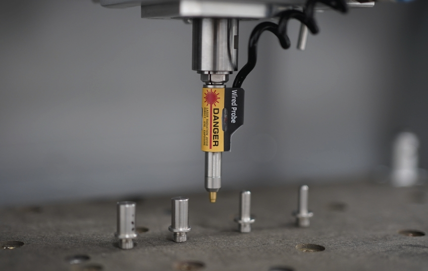
2. Probing: When the wired probe is triggered, the green indicator light turns on.
3. Laser indicator: Press the wired probe twice to turn on the laser indicator (used for manual tool setting of the XY axis). The laser indicator will also be turned on automatically when probing, scanning boundaries, or auto-leveling.
4. Test: Open the drop-down list in the status toolbar and select the diagnostic function, the diagnostic status dialog box will pop up. Press the wired probe and you can see the Probe signal is triggered, indicating the wired probe is working.

Note: Unlike the crash of milling bits, the crash of the wired probe may cause serious damage to the probe. Please use the wired probe with caution. Always observe its traveling path, and stop the machine when finding any obstacles to protect the wired probe.
Manual Probe
Use case: Normally, using the wired probe and the anchor-based positioning system is quite enough for most jobs. But when you need to place the workpiece not at the anchor point and need to accurately find the origin, you can use the manual probe.
Note: you must insert and calibrate a tool using the automatic tool setter prior to beginning the manual XYZ probing process.
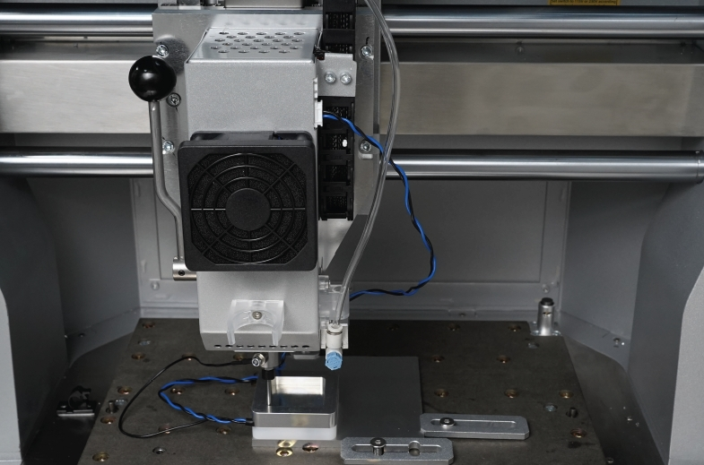
Usage:
1. Unplug the wired probe and plug the manual probe into the 4-pin socket on the top right of the spindle shell.
2. Place the manual probe (white plastic side) against the lower left corner of the workpiece firmly.
3. Move the machine and let the milling bit be positioned in the square area of the manual probe.
4. Attach the magnetic end of the manual probe to the spindle shaft as shown.
5. Click the 'Set Origin->Set By XYZ Probe" function, and set the height offset and the diameter of the milling bit. (It is recommended to use the 3.175mm diameter test rod we provided for probing so that the default parameters can be applied directly)

Note: Tip: The manual probe process will automatically set the origin of X, Y, and Z axes. There is no need to set them again.
Emergency Stop Button
Just like the main button in front of the Carvera Air machine, when any unexpected situation occurs, you can quickly press the emergency stop button to stop the machine, and the machine will stop immediately and enter the alarm state. You need to go to the control software to unlock the machine before continuing to use it. The emergency stop button has a self-locking function, just turn the emergency stop button clockwise to unlock it.

Air Assist Module
Use case: There are two main use cases for the air assist module. One is for chip removal and cooling during CNC machining, especially when machining metal materials. The second is to prevent the material from burning during laser engra ving to improve the engraving quality.
Installation: An normal small air pump is more than enough for the Carvera air assist module, insert the 8 mm pipe into the plug at the back of the machine, and ensure that the air pipe is firmly fixed.
Air control:
1. Adjust the blue knob at the end of the air assist module to control the airflow, pull the knob to adjust, and press the blue knob to lock. Turn the knob clockwise to decrease the flow and counterclockwise to increase the flow.
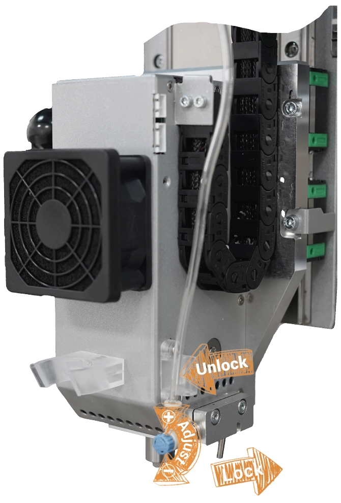
2.The angle of the air nozzle can be adjusted to match different tool lengths and laser focus position.
Note: The air assist module and dust collection module cannot operate simultaneously. Please remove the dust shoe before using the air assist module. When the air assist module is not used for an extended period, turn off the air pump.
Workholding Tools
Workholding is one of the most important steps when using a CNC machine. Carvera Air provides two different workholding methods and corresponding tools to adapt to different types, shapes, and sizes of workpieces. While holding the workpiece, you can also locate the workpiece to the pre-defined position accurately by using Carvera Air’s anchor-based system.
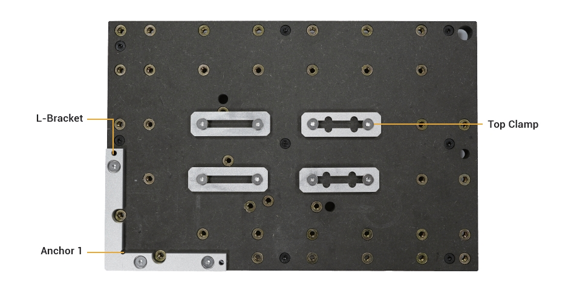
1. L-Bracket: Carvera Air provides a L-shaped bracket, which can be fixed at one of the two anchor points with two 4mm dowel pins and three M5 screws (the thick bracket uses long screws). The lower left corner is Anchor 1, and the middle position is Anchor2. There are two semi-circular openings of the thin positioner, you can put two M5 screws to fix the lower-left corner of the workpiece there.
2. Top Clamps: The top clamp usually fixes the workpiece with a thickness of less than 2 cm together with the L-Bracket.The purpose of the top clamp with a cross groove is to facilitate the use of long sides to fix the workpiece. We recommend using shims at the end of top clamps to fix
Note: The top clamp is not very thick, so please do not screw too tight.
Note: If you need to cut through a workpiece, we highly recommend placing a 1-2mm thick waste board (as the complimentary one) under the workpiece. This can avoid damage to the workbench.
Note: Please select corresponding length screws to fix different workpieces, you do not want to scratch the plate under workbench.
Bit Collar Installer
To cooperate with Carvera Air’s auto tool changing mechanism, you need to use the collar installer to install the collar when replacing new milling bits. The collar installer can do both installation and removal. (the collar is reusable).

Collar installation: As shown in the figure, unscrew the front part of the installer. Insert the collar and the tool. Put in the installation metal ring (support 3.175/4/6/6.35mm). Loosen the tail pressure screw, screw back the front part, and tighten the tail pressure screw to complete the installation.After the installation is complete, the collar will be embedded with the tool, leaving a length of about 12mm at the tail for clamping.

Collar removal: As shown in the figure, unscrew the front part of the installer, put the tool with the collar. Put in the removal thimble, loosen the tail pressure screw, screw back the front part, tighten the tail pressure screw, and the removal is complete.
Note: The milling bits are sharp, be careful when install and uninstall collars.
Dust Collection Module
Chip evacuation is an important part of CNC but is usually ignored by other desktop-level CNC machines. Carvera Air provides a convenient way for you to attach an external vacuum.
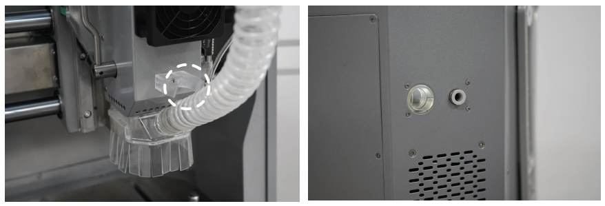
1.Use cases: The primary factor in deciding whether to use the dust collection system is potential interference. If obstacles in the machining path block the dust shoe, do not use the dust collection system. Dust collection is ideal for machining thin and flat workpieces, such as plates. Avoid using dust collection when machining thick or irregular workpieces, or when utilizing the 4th axis.
2. Installation/Removal: Two fixed magnets are positioned above the dust shoe, allowing for easy magnetic installation and removal. The notch on the dust shoe aligns with the spindle shape for precise positioning. When not in use, the dust pipe can be secured into the upper latch.
3. Dust Extraction: Connect an external vacuum cleaner to the dust port on the rear of the machine (22mm inner diameter; an adapter may be required). You can manually start and stop the dust collection system. Alternatively, you can automatically control the external dust collection equipment using the machine's external control port. For detailed instructions, please refer to the official knowledge base: https://wiki.makera.com/
Note: Installing the dust shoe may interfere with rapid tool changes. You can choose to remove the dust shoe during tool changes based on your usage preferences.
Note: Use caution when installing or removing the dust shoe, particularly if a milling bit is present in the spindle.
Rotary Module
1. Preparation: To facilitate transportation, the spindle box for the 4th axis is fixed in the right position. Refer to the illustration to loosen the four screws securing the spindle box. Carefully align the leftmost side of the 4th axis spindle box with the left side of the 4th axis base plate.
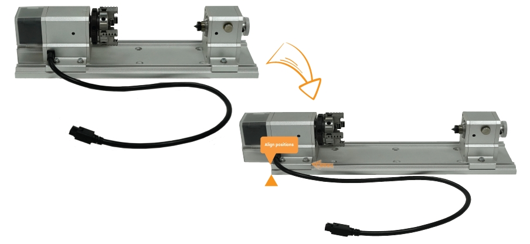
2. Installation:
2.1 Using two 4mm alignment pins, position the 4th axis at the center of the worktable as shown in the illustration. Fasten the 4th axis to the worktable with six M5×20 screws.
2.2 Ensure the machine is powered off before proceeding.Bend the 4th axis connection cable towards the rear inside the machine. Insert the cable into the 4th axis interface at position 1 in the illustration (ensure the dust cover at the interface is open first). Using the hex key and M4×8 screws provided in the 4th axis packaging, secure the cable clamp to position 2 shown in the illustration (remove the existing screws from the original position first).
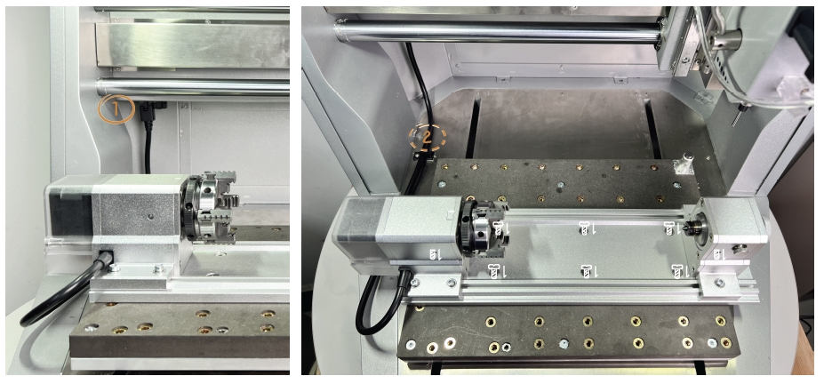
3. Workpiece holding:
3.1. Loosen the locking screw at position A on the tail stock as shown in the figure, adjust the tail stock tip to the right side by turning the knob counterclockwise.
3.2. Loosen the 2 fixing screws at position B.
3.3. Use two wrenches to adjust the opening size of the chuck and place the workpiece in.
3.4. Align the tail stock tip to the end of the workpiece, and tighten the two fixing screws at position B.（We highly recommend drilling a small hole at the end of the block tail for better holding strength, especially for hard materials.)
3.5. Use two wrenches to tighten the chuck, push the tail stock tip close to the workpiece by turning the knob clockwise, and lock the locking screw at position A. (Don't push too hard to the workpiece, it's ok when there is no gap and backlash, better drill a small hole first at the center of the workpiece tail for fixing.)
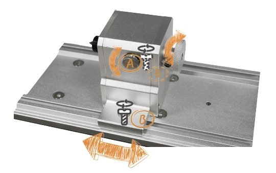
4. Software Settings: The right edge of the headstock is the reference point for setting the working coordinates of the rotary module. When performing rotary machining, you only need to set the distance between the X axis and the reference point and set Y to 0.
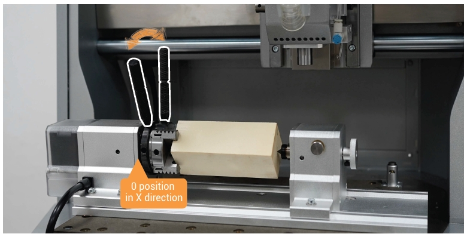
Note: Usually, you don’t need to move the head stock, because the reference point on the head stock should be fixed for precise positioning. Ensure that the holding position/size/G-Code/work coordinate of the workpiece match with each other, otherwise it may cause damage to the module or tool bit.
Spindle Collet Installer
Carvera Air comes with a 1/8 inch(3.175mm) spindle collet. This is the commonly used size for desktop-level CNC machines, which can meet most machining requirements. For special sizes such as 4mm/6mm/6.35mm, you can change the spindle collet and the tail shaft of the wired probe.
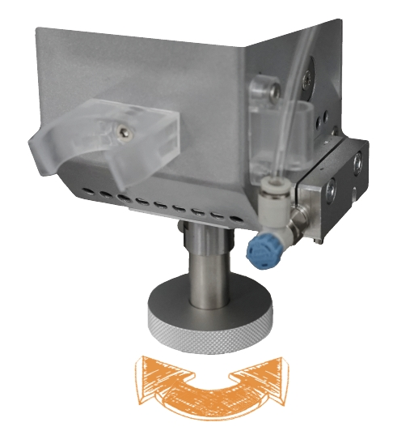
1. Change spindle collet: Use the handle to drop the current tool, insert the spindle collet installer into the current collet, and rotate counterclockwise to remove the current collet. Use the same way to install the new collet. (Do not over tighten)
2. Change the tail shaft of the wir ed probe: Rotate the wired probe’s tail shaft counterclockwise to uninstall. Use the same method to change the new tail shaft. (Do not over tighten)
Laser Module
The Carvera Air machine has an optional 5W diode laser module, which can engrave wood, plastic, and other materials, an excellent complement to the Milling function.
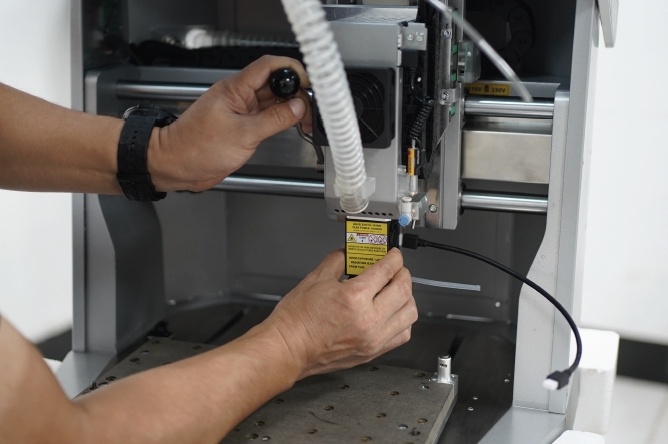
Installation/Removal: Insert the laser module as you would a standard milling bit, ensuring its orientation matches the direction indicated in the image. Confirm that the laser module does not rotate post-installation. Connect the cable to the laser module and to the 3-pin socket located at the
top right of the spindle casing.
Optional - you can use the included silicone tube to connect the air inlet of the laser module to the air nozzle for Air Assist during laser processing, achieving better laser engraving results.
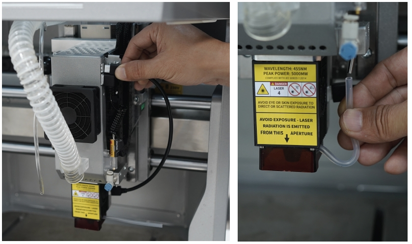
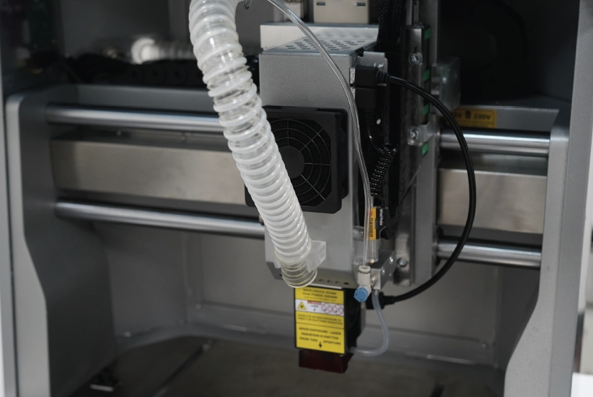
Note: The focal length of the laser module is fixed at approximately 5mm below the laser module (including the protective plate). Please ensure the material is flat, and make sure there are no obstacles higher than 5mm around the workpiece.
Note: Always wear laser protection goggles when using laser function.